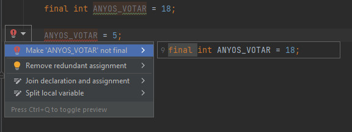
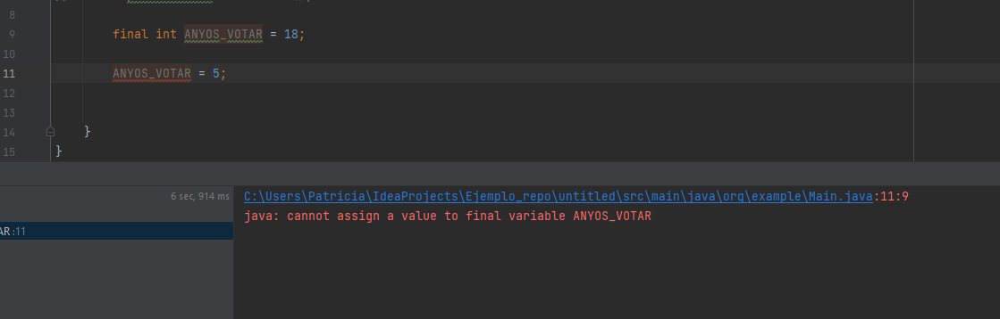

Variables
Una variable es la unidad básica de almacenamiento en un programa. Como su propio nombre indica, el valor almacenado en una variable se puede cambiar durante la ejecución del programa.
⚠️ ALERTA PHYTON: ¡En Java, todas las variables deben declararse antes de que puedan ser utilizadas!
Podemos declarar las variables en Java de la siguiente manera:
float simpleInterest; // Declarando variable float
int time = 10, speed = 20; // Declarando como entero e inicializando el valor a 10 y 20 las variables 'time' y 'speed'
char var = 'h'; // Declarando como caracter e inicializando el valor de la variable 'var'Constantes
La palabra clave “final” es un modificador que se puede usar al declarar variables y evitar cualquier cambio posterior en los valores que inicialmente se les asignaron. Esto es útil cuando se almacena un valor fijo en un programa para evitar que se altere accidentalmente, por ejemplo, los años para poder votar (18).
final int ANYOS_VOTO = 18;Las variables creadas para almacenar valores fijos de esta manera se conocen como “constantes“, y es convencional nombrar constantes con todos los caracteres en mayúsculas para distinguirlas de las variables regulares.
Los programas que intentan cambiar un valor constante no se compilarán, y el compilador javac generará un mensaje de error. ¡Pruébalo!

